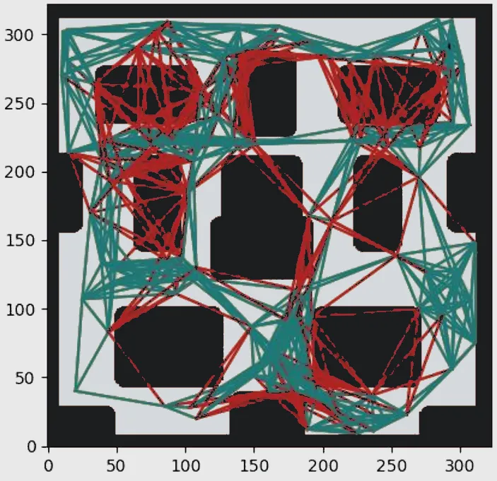
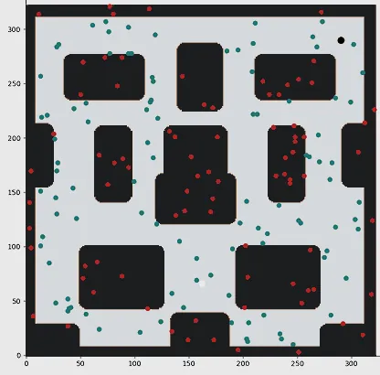
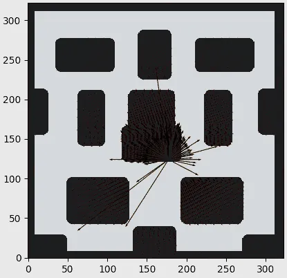
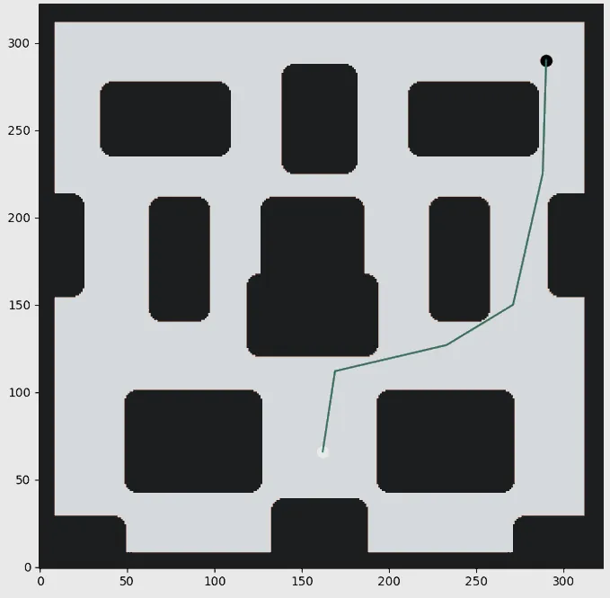

01 · Try it
The planner, running in your browser
The coursework map, re-implemented here. Switch between footprint masks to see how C-space reshapes the corridors, then move the goal and watch A* replan.
Five planners for a 1 m-wide robot in a cluttered world, benchmarked against A*.

Drive DE NIRO, a 1 m-wide mobile manipulator, from (0, −6) m to (8, 8) m through a cluttered world where the direct route is blocked.
C-space dilation, manual waypoints, potential fields, a probabilistic roadmap and Dijkstra search, benchmarked against A*.
A roadmap path of 18.68 m: within 4% of optimal and 15% shorter than the manual route.
01 · Try it
The coursework map, re-implemented here. Switch between footprint masks to see how C-space reshapes the corridors, then move the goal and watch A* replan.
Live A* planner
18.05 m
Shortest path from start
Goal (8.0, 8.0) m. Path found.
Tap or drag on the map to move the goal. Grey shows the C-space margin added for the robot’s 1 m width.
02 · Configuration space
DE NIRO is 1 m wide, so every obstacle is dilated by its radius and the robot can be planned as a point. On a 320 × 320 grid at 16 px/m, a circular mask keeps corners true to shape and leaves a 0.72 m corridor where a square mask leaves only 0.31 m.


03 · Results
The probabilistic roadmap, searched with Dijkstra, found a path within 4% of the A* optimum and 15% shorter than hand-picked waypoints. Potential fields were fastest to react but needed careful gain tuning to avoid local minima.
Uniform sampling misses narrow passages, so we proposed bridge sampling to close the remaining gap.
